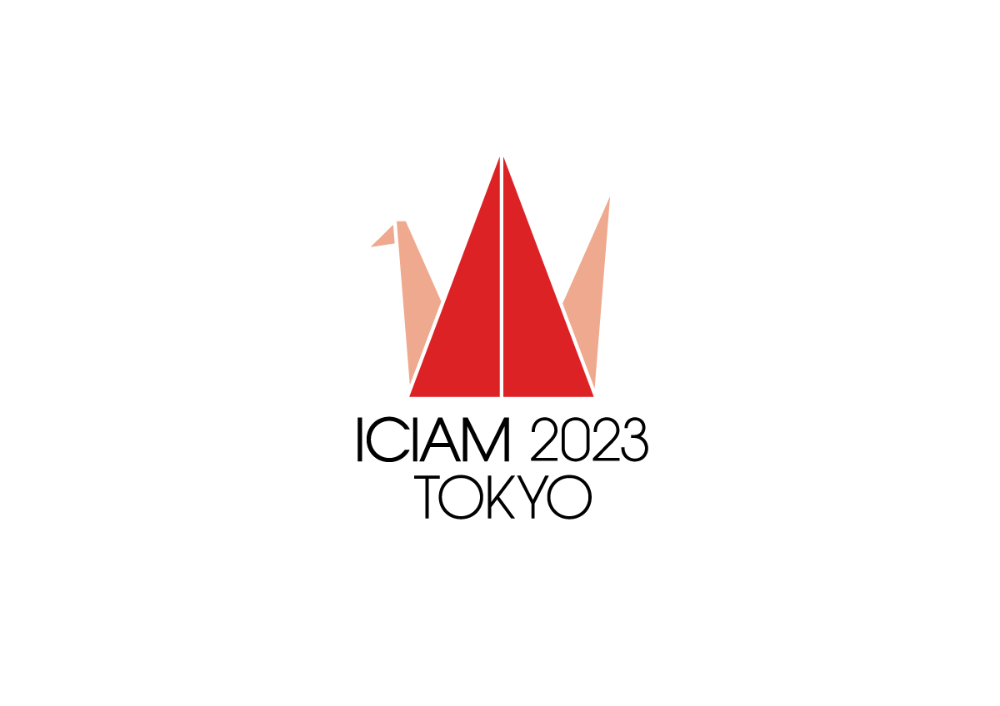

Workshop Orgarnized
Math
-
Organizer of the meeting of the Mexican Mathematical Society:Cruzando el estrecho de Bering.
 We invited 6 Latin mathematicians working in Asia to describe their experiences and answer questions of the public.
We invited 6 Latin mathematicians working in Asia to describe their experiences and answer questions of the public.
- Organizer of Mini sympossium "Poset Combinatorics" 2D (Aug.22, 15:30-17:10) at the ICIAM 2023, Waseda University, Japan. 
Machine learning / AI/technology
- Organizer of the "Civic technology seminar of Busan". Our first talk is about "Deep fakes". See the poster for zoom link id.
- Workshop organizer in National Polytechnnique Institute Mexico. "Temas avanzados de ciencia de datos" from November 14 to 18, 2022. Sponsored by the patrimonial chair Ing. Eugenio Méndez Docurro.
- Workshop organizer (in Spanish) at the 5th International Meeting on Artificial Intelligence and its Applications RIIAA 2022 August. Title: "Trained in USA and Used in Latin America: Balancing Between Safety and Surveillance of BIPOC Populations with AI”
- Workshop organizer (in Spanish) at the 4th International Meeting on Artificial Intelligence and its Applications RIIAA 2021 August. Title: "Métodos para corregir el sesgo/prejuicio en algoritmos" We talked about methods to correct bias on algorithms of ML.
Other
-
Organized a math and computer science competition. - Amigo 친구 global games
-